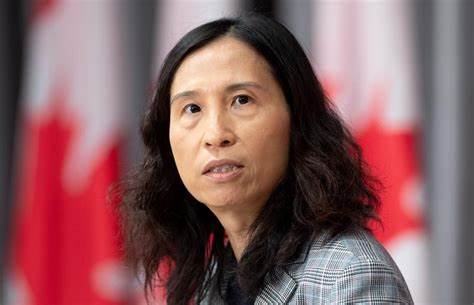
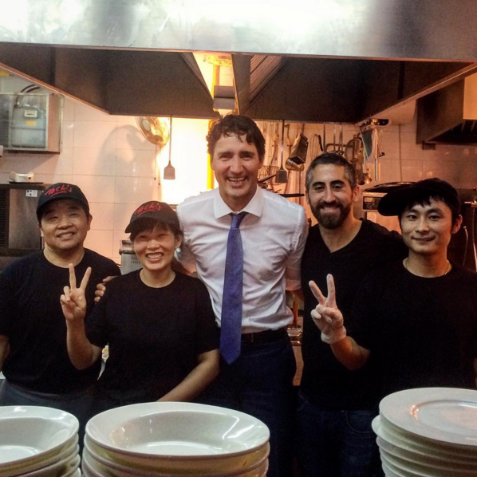

Shushma Datt, being presented an award for "Multiculturalism and Anti-Racism"
Straight.com:
TDC_ARTICLE_START
Gurpreet Singh: Seasoned broadcaster and antiracism campaigner calls for an end to hate against Chinese people
Amid growing bigotry against people of Asian origin during the COVID-19 pandemic, the founder of a multicultural radio station has urged everyone to maintain calm and be kind.
Back in January 2015, the CEO of Burnaby-based Spice Radio, Shushma Datt, started a campaign against racism on the birth anniversary of Martin Luther King Jr.
The #HandsAgainstRacism initiative has entered its sixth year and aims to educate people to be against discrimination in any form.
To mark the beginning of Asian Heritage Month on May 1, she called upon her listeners and the community at large not to indulge in scapegoating people of Asian origin, especially those of Chinese descent, when the entire world needs to fight back against COVID-19 together.
TDC_ARTICLE_STOP
#HandsAgainstRacism is one of the straight up dumbest Anti-Whitism's I have ever seen in my entire life. It's this entirely harmless signal fest, where a bunch of shitty brown people put videos on YouTube with < 20 views doing something something fuck Whitey. It's definitely propaganda for us, since it's always nice to have your enemies being associated with shittiness.
Actually, I think it's nice to put into perspective something, how big Gurpreet Singh really is.
Here's a link to his YouTube channel. Below is a picture.
He also posts a lot of random nature stuff.
Take a look at those views. It's not even like this guy is hugely popular amongst brown people. However, he pushes Schlomo's message, so he gets promoted by these propagandists.
UPDATE: Although I did find one 40 second video on his channel from 2019 that got 1,500 views, so I guess I stand corrected on that. Kind of.
TDC_ARTICLE_START
Early this year, B.C.'s minister of state for childcare, Katrina Chen, visited Spice Radio to participate in the campaign and share her concerns over growing animosity against people of Chinese ancestry.
She noted that there have been attempts by right-wing forces to polarize people in Canada—and alleged that they are trying to take advantage of the current crisis.
Only recently, a Conservative MP, Derek Sloan, questioned the nationalism of Canada’s top doctor, Theresa Tam, who was born in Hong Kong.
TDC_ARTICLE_STOP

I skipped a lot of this tiring, tedious article. The gist is what you could expect. "Wahhh, insertNonWhiteGroupHere is being victimized by mean attitudes." For the record, while we're trying to destroy the Donor-Right, Derek Sloan "questioning the nationalism of Theresa Tam," is both funny and obviously true.

Dr. Theresa Tam, suspected zombie.
I personally question whether she's even a real person, or some animatronic machine created to laugh at the peasants.
TDC_ARTICLE_START
Datt thinks that Trudeau has shown leadership by trying to take the Chinese community into his embrace.
“Unlike Trump, he isn’t bashing any particular group of people”, she said.
Notably in February, Trudeau went to a Chinese restaurant to celebrate his daughter’s birthday to dispel fears.
TDC_ARTICLE_STOP
Oh yeah I'd forgotten how retarded that was. Like, in the middle of a "SUPER DUPER CEREAL PANDEMIC OMFG I'M STEPPING OVER CORPSES LEFT RIGHT AND CENTER," Joffrey takes the time to not just go to a restaurant, without a mask, goy, but also a Chinese Restaurant. He does this because he believes in science.
Actually I've noticed two things with Joffrey. First, he always has this retard smile plastered on his face during his photo-ops. Second, he's always smiling way harder than everyone else in the picture. Like he'll be standing there with his face in this doofy smile that doesn't quite reach his eyes, and there's these unenthused Chinese people or whatever beside him.

Like this guy has two poses. First, he'll do what he thinks is this, I don't know, "I'm a serious guy," look.
Or, he's got this bizarre overly hyped fake look, where he pretends to be seriously happy or something. Reminds me a lot of the wojack soyface meme.
Anyway, what's really important in a SUPER DUPER CEREAL PANDEMIC is making sure to not discriminate against a racial group that is at high risk for infecting everyone else.
TDC_ARTICLE_START
Years ago, people of Chinese ancestry faced a similar situation in the aftermath of the deadly SARS virus hitting the country. The then-Liberal prime minister, Jean Chrétien, also went to a Chinese restaurant to show his solidarity.

In the meantime, Spice Radio named Harsha Walia and Kal Dosanjh as this year’s recipients of its annual awards for fighting against racism.
Walia is a published author and social justice activist, whereas Dosanjh is a Vancouver police detective and founded a registered charity called KidsPlay Youth Foundation to educate youngsters to avoid violence, racism. and gangs.
The event that was supposed to be held in Surrey on March 21 but had to be postponed indefinitely due to the public health emergency. Nevertheless, the conversation on racism continues on Spice Radio's airwaves.
TDC_ARTICLE_STOP
Longtime Anti-White Activist Harsha Walia.
Harsha Walia was actually what linked me to Spice Radio. I got Harsha Walia from the
articles on UBC's "Social Justice Institute". She's a pretty standard Anti-White Activist, but of course she deserves a much closer inspection, I just haven't gotten to her yet.